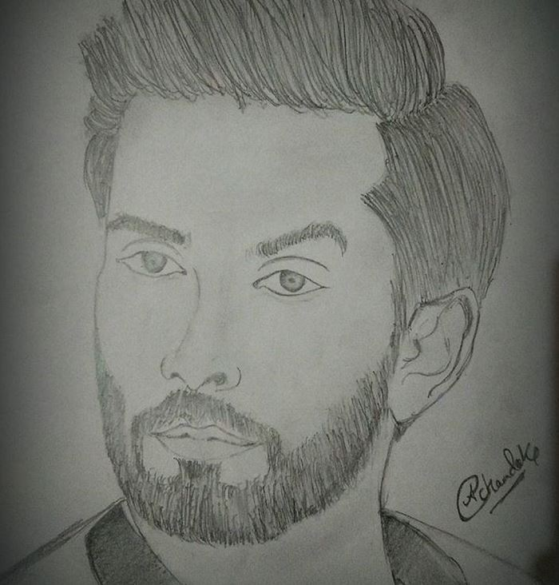

- Interest
- Home
- About Me
- Interest
- Contact Me

INTEREST
DANCING
|
Right from my childhood,outdoor games didn't fascinate me, but yes Dancing was something that grabbed my interest and after performing at few events in my school, my intrest grew up. But then as I grew up, I became more busier with day to day routine, I couldn't have further interaction with Dance. |
 |
|---|
SKETCHING
|
Sketching is something which I have been doing since my childhood and I love it and I also guess this is something which is god gifted in me. I lost interaction with dancing but I am sure I wouldn't loose the same for sketching. |
 |
|---|
TECHNICAL
|
As the world around me developed I realised that Technology started winning my attention and yes then I started learning more about new technologies or anything related to it. In my college I am a technical member at RAIOTLab where we work on robots and new technology. I have a great interest in AI and IOT. |
 |
|---|
TRAVELING
|
My next interest is traveling to New places but I prefer going on road trips on bikes rather than in trains.I love riding bikes , whenever I used to feel low in my school times I used to go out for short ride but after coming to college this was not possible for me , I really miss my bike . |
 |
|---|